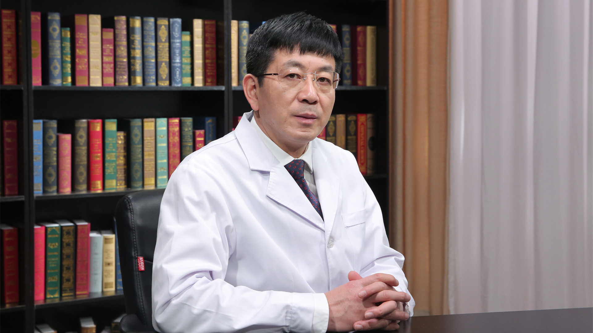

1.23 分娩镇痛¶
徐铭军 主任医师¶

首都医科大学附属北京妇产医院麻醉科主任 主任医师 硕士生导师；
首都医科大学附属北京妇产医院怀柔妇幼保健院院长；中华医学会麻醉学分会产科麻醉学组副组长；世界疼痛医师协会中国分会分娩镇痛专业委员会主任委员；中国心胸血管麻醉学会非心脏手术麻醉分会候任主任委员；中国妇幼保健协会麻醉专业委员会主任委员；北京医师协会麻醉专科医师分会副会长；北京医学会麻醉学分会副主任委员；首都医科大学麻醉学系副主任；《中华麻醉学杂志》《临床麻醉学杂志》《国际麻醉学与复苏杂志》《中华麻醉大查房》等编委。
**主要成就：**近五年专业核心期刊发表文章100余篇，SCI发表文章10余篇，获得国家专利4项；主编出版了《妇产科麻醉学》《短效肌肉松弛药的应用进展》《让妈妈不再有受难日–与准妈妈聊无痛分娩》；主译《ATLAS OF Regional Anesthesia》《危重症孕产妇多学科监护治疗》；副主译《Obstetric Anesthesia Principles and Practice》；2018年将主编出版书籍两部，参编书籍若干部。
专业特长：擅长高危产科麻醉、分娩镇痛、门诊无痛技术、妇科腔镜手术的麻醉。
什么是分娩镇痛？和无痛分娩是一回事吗？¶
（采访）说到分娩，很多准妈妈的第一脑海里，可能是电视剧里面撕心裂肺的哭喊，更有甚者说因为害怕疼痛，而选择剖宫产，而今天我们跟大家聊的分娩镇痛是不是我们老百姓所说的无痛分娩，使用了就一点疼痛感觉都没有了？
好，这是很好的问题。我们普通老百姓管这个名词叫无痛分娩，但是在医学界我们更喜欢管它叫分娩镇痛，实际是一回事儿。
什么叫无痛分娩？
就是说在准妈妈分娩过程中，我们给她采取一个措施，使她的产痛降到最低，整个分娩过程中让她不感觉到产痛的巨大的折磨，所以这叫无痛分娩。
是不是一点都不痛，是这样的，世界上在西方国家，发达国家，一般来说她们确实应该叫无痛分娩，因为她们在分娩过程中确实是一点都不感觉到疼痛。那么这个我们能不能做到，太容易了，但是在我们国家，一般来说我们还是叫分娩镇痛，保留她一些轻微的宫缩疼痛的感觉。
这样的话可以让产妇在整个分娩过程中，她能体验到宫缩的来临，然后可以体验到胎儿胎头旋转、下降整个分娩的过程。这样的话一旦等宫口开全的时候，我们产妇可以很好地配合助产士，屏气用力把胎儿生出去。
完全的无痛分娩是非常容易做到的，也就是说加大药物的浓度和剂量就好了，但是完全无痛的分娩确实对分娩过程会造成一点影响。只不过是国外它不在意这点事情。国外因为她的疼痛是第一位的，所以她分娩可以放在第二位。那么带来分娩过程中的一点点影响，他们认为无所谓。
那么在我们国家最少是目前，我们的产科界，他们认为分娩是第一位的，疼痛不是最主要的，疼不疼我们这么多年，五千年文化历史了，分娩必痛，所以他们认为疼痛不是最主要的，但是能让她减轻疼痛当然更好，所以是这样一个关系。
在我们国家还是保留一点轻微的宫缩痛更好一点，我个人认为，让产妇在整个分娩过程中，能体验到一点宫缩痛还是比较好，这样的话产妇整个分娩过程中，她都有这个体验。
当然了，在这里头一定要强调一点，就是说我们是尽最大程度的降低产痛，那么你保留一点宫缩痛是以不影响病人的情绪、休息为前提，这样一个情况。
如果我们说拿0到10分这么一个疼痛的划分来说，我们一般往往打镇痛之前病人的疼痛接近10分，大概是9分，8分到10分这么个样子，当然有的产妇跟我们表达12分，就表达她强烈的疼痛的这种感受。我们打完镇痛，我们希望她是在0到3分这样的一个范围内，不要影响她的睡眠，休息，情绪等等。当然也有可能是0分，但我们不追求0分，
（采访）我国是什么时候开始推广分娩镇痛的？
我们国家实际上是如果要是追溯到很早以前，实际在1963年，北大医院有个叫张光波的麻醉医生，就已经在参加的全国麻醉学术大会上宣读了她的论文，就是分娩镇痛的这样一个论文。也就是说实际上在很早就已经开始了。
（采访）其实也是一个很久的历史了，那我国推广的怎么样？
在我们国家推广的实际还是非常不容乐观的。在最早我们说分娩镇痛率不足1%，现在我们中华医学会产科麻醉学组，我们做了个调查，是在全国几大省，就是几大区，比如说西北地区，华北地区，华南地区等等，总共调查了46家妇产专科医院，但是调查的量很大，接近150万的产妇。
那么从全国妇产专科医院来看，最好做的是华东，华东地区，它们是38%，做的最差的地区是西北地区，分娩镇痛率仅仅是1.02%。那么从我们妇产专科医院来看，我们目前也就不到10%。整个我们北京地区分娩镇痛率，我做过一个调查，也就10%左右。
为什么在我国很少孕妇会选择分娩镇痛？¶
（采访）接受了分娩镇痛，她的疼痛感大大降低，为什么这么好，推广起来却这么难？
无痛分娩技术实际上已经是很成熟的技术了。椎管内的无痛分娩技术，就是我们平时老百姓更多听着的，硬膜外无痛分娩这个技术，是上个世纪七八十年代在国外就已经有了，我们国家也比较早就实施了，当然做得更好的是这十来年。
为什么我们这么好的这么成熟的一个技术，在我们国家的无痛分娩率却是很低，那么从全国妇产专科医院来看，做的最好的是华东地区，它们是38%，做的最差的地区是西北地区，分娩镇痛率仅仅是1.02%。
从我们妇产专科医院来看，我们目前也就不到10%。整个我们北京地区分娩镇痛率，我做过一个调查，也就10%左右。这里因素太多了，首先就是我们孕产妇和家属，对这样一个技术的认知程度，她们很多人都压根不知道，生小孩的时候，我们医生可以给她提供这样一个技术，让她不痛并快乐地去分娩，她自己都不知道。
还有妇产科的医生，包括助产士，对分娩镇痛的认可的这样一个情况。因为我们国家的产科医生、助产士，她们原来有个固有的观点，认为打了镇痛以后，当然我说的镇痛就是硬膜外的镇痛了，用了这种方式以后，可能必然对宫缩产程、产力，对分娩造成影响。
过去的无痛分娩，有可能确实存在一点问题，因为过去用的药物的剂量和浓度都过大，现在我们医学界，一般来说都是倡导的低浓度，小剂量的这样一个概念，所以我们都可以做到Walking epidural，就是可行走的硬膜外镇痛，产妇打了镇痛以后，她都可以走路，溜达，所以对宫缩产程，产力，对胎儿都没有什么影响。
还有一个层面，我们现在倡导的是无痛医院，舒适化医疗，所以我们的门诊很多都进行了，无痛化的这样的一个手段，比如说无痛胃肠镜，无痛人流，无痛的取卵等等这一类的。还有许多无痛的这些操作，占用了大量的麻醉医生，这都得需要麻醉医生去实施。所以舒适化医疗肯定离不开麻醉医生。
这样的情况下，在这样一个大背景下，我们国家麻醉医生人手极其短缺。我们国家有一个统计，现在我们全国的麻醉医生仅仅有7.5万到8万，这么一个数字。也就是说每万人口拥有麻醉医生，是0.4到0.5个，这么一个比例。
英国是多少？英国每万人口拥有麻醉医生2.8个，美国每万人口拥有麻醉医生是2.5个，所以就是这些西方发达国家，它人均每万人口拥有麻醉医生，是我们的五倍到六倍这样一个内容。所以凸显我们麻醉医生人手太少了。所以这也是问题。
日本他们国家每万人拥有麻醉医生是1，但事实上，日本的分娩镇痛做的也很差，它们的分娩镇痛也就是在百分之几左右。 为什么会是这样的？因为也是他们麻醉医生不足，但是他们更像西方那样的一个概念，所以他们是人力是最值钱的，我宁可不做，我也不能加班加点去做。
中国不一样，中国即使在这样的情况下，他还是加班加点去做，所以这是一个很重要的问题。导致我们国家现在分娩镇痛率这么低，当然还有很多，比如收费的问题，目前我们国家无痛分娩还没有收费项目，所以这是一项社会效益极其良好的这么一件事，但是经济效益极差。导致了在我们国家分娩镇痛率这么低。
分娩镇痛的方法有哪些？¶
（采访）您能给我们详细的介绍一下分娩镇痛的方式都有哪些吗？
分娩镇痛，俗称无痛分娩，如果从大的宏观角度来说，不外乎有两种方法，一种叫非药物性无痛分娩，一种叫药物性无痛分娩。
什么叫非药物性？
顾名思义，只要不用药，就是非药物性的，比如说是精神安慰，精神慰藉。也叫自然分娩法，就是说我给你进行精神的支持，心理的按摩，转移你的注意力，增强和提高你战胜产痛的必然的信心，靠语言，靠一些动作去抚慰产妇。
当然包括还有听音乐，包括大家可能知道的水中分娩等等，但水中分娩现在已经不提倡了，倒是可以水中待产。水中分娩已经不提倡了，包括我们结合中国的一些传统的按摩等等，这是一大类。
但是这一类都是从精神层面的支持和慰藉，你的疼痛它客观事实还存在，但是你转移了她注意力了，它可以是从某种程度，某个阶段发挥一定的作用。大概可以减轻产痛20%到30%。当然还有更物质化一点的，比如说是针刺，用韩氏仪，就是在你穴位上进行电刺激，它也是没用药，所以它也是归到非药物性分娩镇痛。这个更具有一点物质基础。
通过刺激你，使你内源性的镇痛物质释放更多一点，我们每个人体内都有内源性的镇痛的物质，脑啡肽、内啡肽、强啡肽都是阿片类的物质，我通过电刺激让你内源性镇痛物质释放多一点以后，就可以使痛阈提高，使你的疼痛有所减轻，这一部分大概能减轻产痛的1/3左右，也就是30%左右。
那么剩下还有就叫什么？
药物性分娩镇痛了，可以给打点止疼药，给点镇静剂，那么再有个手段，就是麻醉性分娩镇痛，就是硬膜外分娩镇痛。我们现在世界上，一提到无痛分娩，实际上基本上就特指的是硬膜外的无痛分娩。
它是通过从腰椎穿刺，然后在硬膜外腔解剖位置上放一个细的管子Catheter，一个导管放进去，然后通过导管往这个部位，就是可以做到持续的，恒速的，低浓度的，小剂量，往这个位置去输注镇痛液。这样的话产生了一定的神经阻滞的现象，产妇就不觉得疼痛了。因为硬膜外腔是神经非常密集分布的，我们知道所有人的痛觉，它都是通过神经来传导的。
比如我这儿掐一下为什么会感觉到疼痛？因为这是伤害性的刺激， 它通过外周神经传递到我的大脑，我大脑感知到疼痛，是这么一个过程，所以我们麻醉的原理，或者镇痛的原理，是往往就是把你的传导通路给你暂时的阻断了，减少或解除疼痛。
实际上有这么几种方法，如果你有伤害性刺激，我把伤害性刺激给你解除了，不让你刺激就行了，比如说癌症，肿瘤在那长在那压迫导致了疼痛，那我就做手术把你这个肿瘤取掉。这是从最根本上解除。
解除不掉你这个东西。当然有些所谓的刺激它是好的，比如说生小孩的宫缩痛，生小孩疼，为什么会疼痛？最主要就源于子宫的收缩，强烈地收缩，它才导致了疼痛。这个收缩是必须的，如果没有收缩，小孩就生不出来，所以它的伤害性的来源我们不能把它取消掉。
如果你要不够强烈，还要用药物给它加强，那么这个伤害性的刺激不能取消掉，那我们就想另一种方法，我们就把传导的通路给你阻断了，让大脑感知不到你的信号传过来它就不疼了。简单的理解就是这样的。
当然还有一种方法就是你既取不掉它伤害性的刺激，疼痛的信号你不能取消掉。这个通路你也没法让它阻滞，就把这块接收的部位把它捣毁了。但是这样的做法几乎是没有的，因为这个做法太难了，你把大脑感知疼痛那一部分，你要捣毁了它，非常难，所以都几乎没有这种做法，也就是把你的传导通路给你阻断了。
分娩镇痛是如何做的？¶
（采访）主任您给我们介绍一下分娩镇痛的一个整体流程是怎样的？
一般来说分娩镇痛都是在产房内实施的，所以不好预约。进了产房以后，产妇因为有比较强烈的疼痛以后，她提出申请，提出申请以后，助产士进行评估，然后产科医生评估，如果在产科的范围内没有什么禁忌证的话，他们会通知麻醉医生，麻醉医生再次进行评估。
从安全性，评估她的心肺功能，中枢神经系统的功能，这种重要脏器的功能，然后再评估她的腰椎的情况等等，来看她适合不适合做椎管内的分娩镇痛。
如果评估完了以后，没有什么问题的话，我们就会扎个静脉，我们叫开放静脉，然后我们所有的医疗行为，我们有创的操作都应该开放静脉，开放静脉不是仅为了给她输液，而是为了发生意外以后的一个紧急的抢救这类的。开放静脉以后，我们就可以把病人推到操作间，我们进行了多功能监护以后，我们开始操作，进行硬膜外腔的穿刺，穿刺完以后妥善地粘贴好导管以后，病人就可以采取自由体位了。
一般来说我们因为是刚给打了麻醉药，所以还是要求她平卧位，我们就配镇痛泵，设置各种参数，这就是基本的流程。然后要交代给病人，或者说交代给产妇，怎么去更好地应用镇痛泵，因为你要不交代给她的话，她不会用。所以我们麻醉医生一定要详细的把如何正确使用镇痛泵，要交代给病人。
然后我们很多病人打完镇痛以后，她可以采取各种体位，也可以走，所以就可以折射，我们分娩镇痛确实对她的宫缩、产程、产力、分娩结局是没有什么影响的。因为病人走路都没有问题，所以她的肌力是有的，它也不会影响宫缩等等。这就是一个最基本的简单的流程。
分娩镇痛和手术麻醉的给药剂量有什么区别？¶
（采访）这个止疼药它发挥的作用，跟我们打麻醉发挥的作用，是不是一样的？
不一样。
我们打麻醉，我们是高浓度、大剂量的局麻药，因为止疼和做手术是绝对两个概念，做手术就是要拿刀子生剌，要切除，要止血，要探查等等，它的刺激的强度，比我们需要做镇痛的刺激强度，要强得很多。所以我们分娩镇痛，只是让她感受在生小孩过程中，不觉得疼了。她还保留所有的功能，比如说她都可以下地行走等等的，不要影响她的运动神经。
所以我们分娩镇痛，我们给的药量，基本上是做剖宫产手术的药量的1/5到1/10，这么点剂量就够了。
（采访）麻醉医生在这个过程中又起到一个什么样的作用呢？
麻醉医生在这里起的就是主导作用，因为这个技术手段，只有麻醉医生才会操作的。所以在无痛分娩这里头，麻醉是在这里承担了最主要的一个角色，就是这个“不疼”，是由麻醉医生来实施的。
当然了我们这是一个多学科交融的这么一个内容。我们产科医生，我们的助产士，也要在这里发挥作用，比如说他们要做评估，是不是可以接受分娩镇痛？比如说打完镇痛以后，她还有那么长时间的一个待产过程中，都需要我们助产士去观察，去处理。
孕妇进行分娩镇痛的最佳时机是什么时候？¶
（采访）从孕妇她有疼痛感去到医院，到孩子分娩下来，有第一产程，第二产程，第三产程，我们什么时候给孕妇进行分娩镇痛的？
这就是谈到了实施分娩镇痛时机的问题了。从目前的观点，任何时间都可以做镇痛。但我们一般来说，都是在第一产程。
第一产程就是有规律的宫缩，到宫口开全这一段时间，这叫第一产程。第一产程如果是初产妇的话，可能大概要有11到13个小时这么长时间。如果是经产妇的话，大概9个小时左右，因为经产妇她宫口扩得更快，她可能会更短一点。
第二产程是宫口开全到胎儿娩出这段时间，传统观点认为是两个小时，如果超过两个小时可能进行一些干预了。还生不下来，有可能就拉去剖宫产了，或下产钳了，或者用其它方法。
第三产程是指什么？胎儿娩出到胎盘娩出这一段过程，就胎儿娩出了，胎盘还滞留在宫腔里，把胎盘要娩出掉，否则的话你会大出血的。这个时间大概是15到30分钟。
第四产程是胎盘娩出到产后两个小时，我们目前更人文化，人性化的医疗行为。管产后两个小时，我们叫第四产程，因为产后两个小时产妇还没回病房，她一般还在产房里观察，所以有第四个产程。
如果理念最先进的，更先进的是全产程镇痛。就是说我生完小孩以后，一直到你出产房的时候，我才停止给你镇痛液，让你整个期间都处于一种无痛，舒适的状态。那么现在新的观点就是让产程延的更长。现在的观点第二产程只要是监护没问题，三个小时都可以。打了镇痛以后四个小时都可以，只要监护母亲和胎儿，没有什么异常的话就可以，就给了更充分的时间让产妇去分娩。
分娩镇痛时是如何麻醉的？对体位有要求吗？¶
麻醉性分娩镇痛就是硬膜外分娩镇痛。现在一提到无痛分娩，基本上就特指的是硬膜外的无痛分娩。
它是通过从腰椎穿刺，然后在硬膜外腔解剖位置上放一个细的管子Catheter，一个导管放进去，然后通过导管往这个部位持续的、恒速的、低浓度的、小剂量的往这个位置去输注镇痛液。这样的话产生了一定的神经阻滞的现象，产妇就不觉得疼痛了。
所以大家可能都听说过腰间盘突出，腰间盘突出，为什么就会疼？是因为腰间盘突出以后，它压迫了那个部位的神经了，所以你就会觉得疼，所以那个部位，是神经非常密集的地方。神经就是管疼痛的，包括有管运动的，当然我们大脑也是神经，这叫高级中枢。
（采访）从脊柱给药，是不是要求孕妇要一直侧躺？
做穿刺的时候，孕妇是需要侧躺的，去接受穿刺，当然国外是坐的，这都无所谓。那么等穿刺完以后，孕妇的体位可以是自由体位，什么样的体位都可以，我们不做强求，但是只是一点，在我们整个分娩过程中，现在我们的医学界，更主张的是叫自由体位。
什么叫自由体位？
如果你是产妇的话，你怎么舒服，你怎么来，你觉得躺着好就躺着，你觉得侧卧就侧卧，或者跪的，趴的，坐的等等都可以，怎么都行，这叫自由体位。而且我们是主张自由体位的。因为自由体位，认为可以促进产程的进展。只是需要我们产妇，需要注意一点，在你自由体位的时候，要记住你背后是放了一个管子，不要动度太大以后，把管子给掉了。如果管子脱落了，这个镇痛就没法实施了。
（采访）是不是一给了止疼药，孕妇的疼痛感就会急速的下降？
我们传统说的单纯的硬膜外麻醉的这种镇痛方法，从给药到她不觉得疼，大概15到20分钟左右。基本上是18分钟左右， 但是对于整个漫长的产程过程中来说，这点等待时间也是可以认可的。
哪些孕妇不适合做分娩镇痛？¶
（采访）是不是所有的孕妇都可以采用分娩镇痛？
如果进入了产房，估计可行阴道分娩的这些产妇，总体来说都可以接受分娩镇痛。但是有些个例的病人可能会存在问题，比如说因为我们要打镇痛，就是在背部、腰部这一块。
如果你恰好腰部这块你有感染了，破溃了，你就不能打了，因为我们安全是第一位的，你这块有感染了，他可能会考虑把感染带进去，或者你这儿是脊柱畸形，或者你这个部位做过手术，或者有脊柱裂，或者你有凝血功能障碍等等，或者你是一个发烧的病人，当然发烧病人还得看，是炎性的发热，还是非炎性发热等等，或者是大出血的病人，已经是休克了也不适合。
但这样的病人，她本身就不应该在那自娩了，这样的病人她肯定就要迅速转为剖宫产了，或者是中枢神经有病变的病人，这样的病人也不会在产房出现了，肯定就是剖宫产了。
（采访）在您接触的这么多孕产妇中，有没有孕妇在采用分娩镇痛的过程中，可能一些情况比较紧急，需要立即剖宫产的？ 也有。
我们正常的分娩过程非常漫长，在这个过程中可能会发生任何情况，那么需要紧急终止妊娠，去手术娩，剖宫产，比如说脐带脱垂了，脐带脱垂了很容易理解，我们母体的血液是要供给胎儿的，是靠脐带来供给的，一旦脱垂，脐带可能就被嵌压了，血液就供不过去了，那胎儿在宫内可能就会死亡的，所以她要紧急剖宫产，把小孩迅速娩出来，包括胎儿宫内窘迫，包括出血等等。
有了这样一些内容，她可能就不适合继续经阴道分娩了，要进行手术娩，快速地终止妊娠。所以总体来说是，估计能在产房经阴道分娩的，这样一部分病人，就都可以接受传统意义上说的硬膜外镇痛。当然为什么要需要产科医生，需要麻醉医生评估，他也是评估你适合不适合打镇痛。
分娩镇痛前，医生需要评估孕妇哪些指标？¶
（采访）我们产科医生还有麻醉科医生都会评估一下孕妇的哪项指标呢？
比如说产妇疼痛很剧烈以后，她主动提出要求，要求要打镇痛，那么我们助产士，产科医生可能要给她进行一些评估，助产士和产科医生，他是从产科的范围里进行评估。比如这个病人有没有出血，循环是否稳定？这个病人有没有发烧，这个病人如果发烧的话，是不是有炎症的发烧，因为在产时发热是一个比较普遍的现象，所以还要区分对待。
麻醉医生评估，就要评估病人的凝血功能好不好，这个病人的心血管系统好不好，当然心血管系统好与不好，是否能打，就再说了，因为这里太复杂了，这就是深入的医疗的内容了。比如说有一些病人心血管系统不太好，或者是功能不太好，或者是妊娠高血压疾病，更适合打镇痛。
为什么呢？
因为你只有打了镇痛以后，解除了她分娩过程中强烈的疼痛的刺激，也就减少了对心血管的这样的影响。使病人可以更舒适，安全地去分娩了。因为有些高血压病人，如果你要不打镇痛的话，她分娩过程中因为有疼痛的刺激，她血压不是进一步的升高吗？这样的话对她是不利的。
麻醉医生评估都是从这几个方面，心、肺、脑，他是从重要脏器评估，当然他也会评估脊柱的条件。你的穿刺部位有没有什么病变，进行一系列的评估，然后评估完以后，认为可以实施镇痛的就可以进行操作了。
（采访）分娩之前，她有没有说想要分娩镇痛，我先去做一下这个指标的一些检测呢？
你说的这个是属于更好的理念。为什么我们国家卫健委现在主张提议鼓励，二级以上的医院都要设立麻醉门诊，就这个概念，就是说把这些内容前置了。麻醉门诊的设立可以更好地保障医疗的安全，优化流程，减短、缩短我们真正手术时的一些时间。因为这样的话，我们麻醉科医生在你入院的时候，就给你进行了会诊了。
比如说你是孕妇，那么你提出做分娩镇痛，我在之前就把你的身体的状况都了解好了，检查项目都做好了，这样的话登记好了以后，这样一旦你提出邀请，实际上相当于，我们早就把术前的评估和检查已经做完了。
所以这个内容，如果做得更好的话，是应该在产前就做了。产前要做，是需要有这样相应的部门去做的。所以在很多医院，已经成立了麻醉科门诊，那么这一部分内容就可以在之前就做了。
硬膜外分娩镇痛是怎么回事？¶
（采访）分娩镇痛的硬膜外镇痛是怎么回事？
我们现在世界上一般一谈分娩镇痛，或者说无痛分娩，指的就是硬膜外的镇痛。
硬膜外就是说是我们人体解剖里，有一个解剖的位置，叫硬膜外，它是神经支配，都要从硬膜外腔走过，所以我们做镇痛，把药给到硬膜外腔就可以阻滞了路过这里的神经，这样的话就使它的传导功能丧失了，你就不觉得疼了，所以这就叫硬膜外镇痛，是我们解剖的这么一个位置。
如果形象的来说就是北京人说话吃羊蝎子羊蝎子就是那个位置，就是硬膜外腔。
（采访）如果说分娩的时候，采用了硬膜外镇痛的方法，我们在给药的过程中，如果说疼痛有所减少了，是不是就能停止给药了呢？
这个时候还是不应该再停止给药，为什么呢？
因为整个产程是比较漫长的，基本上如果初产妇是要需要十多个小时的，因为你一旦停止给药以后，我们的药物代谢是比较快的，所以给药以后可能很快产妇药物的镇痛作用就消失了，产妇还会感觉疼痛。
所以我们一般的做法都是，给打完镇痛以后连接一个镇痛泵。我们是通过硬膜外腔置一个小管子以后，通过这个管子，我们持续、恒速、低浓度、小剂量的往里泵注止疼药。
靠什么来泵注？
就靠我们有个镇痛泵，我们会把药液装到我们镇痛泵，我们设置了很多参数以后，持续恒速的往硬膜外腔去推注镇痛液，所以不应该停。
分娩镇痛会对孕妇和胎儿有影响吗？¶
我们目前世界上流行的硬膜外分娩镇痛方法，经过大数据的分析，大量的临床病例和严密的临床观察，目前的分娩镇痛方法对母亲是没有危害的。因为我们使用的技术手段，就类似于剖宫产麻醉的技术手段，但是我们的用药量要比剖宫产麻醉药，仅仅是它的1/5到1/10，这样一点比较微小的用量。
从目前的这样大量的数据来看，对胎儿和新生儿也是没有影响的，甚至很多都是对胎儿、新生儿是有利的。
为什么？
因为我们打完镇痛以后，我们的胎盘的血运就丰富了，加强了，这样的话，使胎儿在宫内的生存状态得到了改善。它更多的供血，供氧给胎儿，所以可以解除，动脉收缩性的胎儿宫内窘迫，解除一些胎儿的不良的生存状态还是有好处的。
那么总体来看，现在的分娩镇痛对母体和胎儿，都是没有不良影响的。
孕妇分娩时如何使用镇痛泵？¶
（采访）我们知道每个人对疼痛的一个感觉和认知是不一样的，是不是这也代表着我们给的镇痛药的量也是不一样的？
我们每一个产妇的产程，都是不一样的，生小孩生多长时间都是有个体性的。包括每个产妇的产痛也是不一样的，有的产妇疼得哇哇直叫，有的产妇也就比较平稳安静的能够度过，所以产痛也是极不一样的。我们的给药量也是这样的，也是个体化给药的。
所以在我们镇痛泵上还有个小按钮，那个小按钮叫PCA，就是说叫病人自控按压，在我们普通的一个设置的给药范围之外，如果还不能满足你的镇痛的需求，你可以按压那个按钮，通过你的按压，就可以单独再给一次药液了。叫镇痛完全个体化。就是通过你个人的按压可以追加给药。
还有一种模式，是我们的镇痛泵，我们设置的时候，只能通过产妇的按压给药，你要不按压就不给药了。所以这个是更完全的个体化了。当然这样的模式，产妇依从性要很好，就说她知道怎么按压，有些产妇她不知道怎么按压，她硬忍，忍不住的时候，再按压效果就很差了。
（采访）作为一名麻醉科的医生，您在给孕妇备药的过程中，您一般会考虑孕妇的哪项指标呢？
我首先会考虑孕妇现在的状况，你是初产妇，还是经产妇，这是不一样的。还要考虑孕妇的疼痛的程度有的孕妇她的产痛感觉就没那么疼。
有的孕妇感觉疼痛得非常厉害，我会根据产妇本身评估当时的疼痛的情况，我会调整药量，当然还会根据产妇的身高，因为我们这个药量是根据产妇的身高和脊柱的长度不同，会有所调整等等，还有她的胎位的问题，等等一些细节，最主要是靠前头这几种。
还要看着产妇的依从性，如果产妇依从性很差的情况下，我可能要把药量调的更多一点。
什么是腰硬联合麻醉？分娩镇痛最常用的方法是哪种？¶
（采访）分娩镇痛的腰硬联合麻醉是怎么回事呢？
硬膜外分娩镇痛，实际上如果大类归属都叫椎管内镇痛，腰硬联合是叫腰麻硬膜外联合麻醉，是在硬膜外基础上，又加了另一个方法联合在一起。腰硬联合镇痛，它比硬膜外镇痛就起效更快，效果更完善，更确切，更可靠。但是技术要求的条件也更高一些，所以总体它跟硬膜外是同一类的。
我们医院用的就是腰硬联合的分娩镇痛方法，就可以达到迅速起效，效果非常可靠。但是后续还是用的硬膜外，它就是前头发挥药效更快的时候，它是用的腰麻起效，但后续接的还是硬膜外。所以总体它们应该是属于一类的方法里头，就是细分出来的一个小分支。
（采访）目前临床上用最多的分娩镇痛方法是哪种？
椎管内镇痛最多用的还是硬膜外镇痛方法。腰硬联合相对用的少一点，大概三七这样的样子，就三成是腰硬联合，七成是硬膜外。事实上像我们医院，还有连续腰麻分娩镇痛，这可能全国也就独此一家。微量的给药可以做到，实现了微量给药，因为它始终是在蛛网膜下隙在进行给药，跟硬膜外腔又是一个不同的解剖位置了。
它的用药量，又是硬膜外给药用药量的几分之一的这么一个药量，它就用药更微小了。这样的话我们透过胎盘，进入胎儿体内肯定就更少了。对这个影响就更小了，但它的技术要求就更高了。
（采访）腰硬联合麻醉，还有硬膜外镇痛，对于孕妇有没有要求？是哪种方法都可以吗？
对孕妇这块没有什么特殊的，只是说医生的一个习惯或者是喜好而已。
静脉分娩镇痛是怎么回事？¶
（采访）静脉分娩镇痛是怎么回事？
静脉分娩镇痛，顾名思义就是扎个静脉针，就像平时我们输液一样，我们是从静脉血管里去给镇痛药，像输液一样，达到一定的止疼镇痛的目的。这个输注的都是输注的止疼类的药物，阿片类的或者是非阿片类的止疼药。
它起效的原理是通过血液里输进了止疼药以后，最终作用在大脑，让它感知疼痛的程度减少，所以顾名思义就知道了，它不是作用在局部，它必须达到一定的药量和浓度以后你大脑才能感受到，所以它不是能很特异性的，只是作用在局部。
还有一点就是静脉镇痛可能会带来更多的一些副作用，比如说呼吸抑制，心血管的抑制等等，这恐怕就会带来一定的危害性。所以从我们目前，我们国内专家共识，或者都是认可的是，静脉分娩镇痛是一种可以替代的方法使用。
那么可以替代什么？可以替代硬膜外镇痛，但它不可以作为主流，也就是说不适合做硬膜外镇痛的这一部分病人，可以考虑用静脉镇痛。但是一旦实施了静脉镇痛，麻醉医生应该严密地监测母胎的各种情况。因为它毕竟还是可能会有一定风险的，而且它的效果也比不过硬膜外镇痛。
（采访）静脉分娩镇痛，它作用的地方是我们的脑袋，那会不会对我们的智力有所影响呢？
比如说我们做手术，全身麻醉，我们全身麻醉有可能麻醉几个小时，十几个小时，只要你在这个过程中，你没有使得病人缺氧的话，它一般来说，从传统到现在来说，它对病人的智力不会有什么影响。因为药物是可逆性的。发挥作用只是在你当时产生作用的时候，它抑制了你的大脑的功能，等药物都代谢完以后，它也就没有抑制作用了。
（采访）如果采取了静脉分娩镇痛，她的给药也是要一直给吗？
也是一直要给。就类似于我们输液一样，一直要点滴进行，持续的给药，直到分娩结束。
分娩镇痛可以降低顺产侧切时的疼痛感吗？¶
侧切是很多孕妈妈所不愿意看到的，侧切要看分几个层面。首先她为什么要侧切？
有的可能就是因为她在分娩过程中，胎头比较大，出产道比较困难，我们所以要侧切，让她宫口再大点。有的怕你撕裂，裂伤了，所以它叫保护性的侧切，就是说我侧切了以后，我这样的让她分娩更顺利一点，然后我的刀口愈合的可能会更好一点，因为什么？
如果我要不侧切，她也会撕裂的，与其这样的，我还不如给你侧切，就这叫保护性侧切等等。
我们说到镇痛和侧切的关系，镇痛首先不会增加侧切率，但是会不会减少侧切率呢？现在没有医学的支撑。因为我刚才介绍了侧切它分很多种情况，所以有些侧切它是为了主动地去做的，或者是保护性的，或者是已经看到它可能会有裂伤，我侧切等等，所以这里头它因素太多。
总体来看，分娩镇痛不会增加侧切率。
（采访）我们知道侧切也是很痛的，打了镇痛药会不会也减少她侧切的疼痛？
这是完全可以的。
因为有的时候我们还专门有这么做的，就是说我准备侧切的时候，让病人多按几次镇痛泵，也就相当于硬膜外多加点药。因为侧切就是相当于一个小手术了，所以我们要加点药。
往往就是我们分娩镇痛，是可以更好地去影响和维护到侧切，侧切完了还有缝合，实际上真正的疼是在缝合，而不是在切的时候。因为切的时候我们人体耐受一刀的锐痛，是很容易耐受的。但是要是缝合的时候，对伤口要去对位缝合，她可能更疼。
这个时候我们有了一个硬膜外的导管，做分娩镇痛，可以很好的满足侧切的缝合。我们一般都说是侧切的缝合，而不是说侧切，是那个时候缝的时候更疼。
（采访）是不是侧切缝合完了之后，我们镇痛药也不需要再用了？
如果是从更理想的角度，我们叫全产程镇痛。全产程是指什么？
就是指第一产程，第二产程，第三产程是什么？胎儿娩出到胎盘娩出这一段过程，胎儿娩出了，胎盘还滞留在宫腔里，把胎盘要娩出掉，否则的话你会大出血的。这个时间大概是15到30分钟。
那么还有第四产程，第四产程是胎盘娩出到产后两个小时，我们目前更人文化，人性化的医疗行为。我们管产后两个小时叫第四产程，因为产后两个小时产妇还没回病房，她一般还在产房里观察。所以有第四个产程。
如果理念最先进的，更先进的是全产程镇痛。就是说我生完小孩以后，一直到你出产房的时候，我才停止给你镇痛液，让你整个期间都处于一种无痛，舒适的状态。实际上在国外她们已经做了，当然这都需要理念非常高，而且人手非常丰富。
在国外产后的第二天都在做镇痛，因为你毕竟比如说有产道的裂伤，有缝合，比如我们刚才说侧切以后的缝合，刀口的缝合，还比如说我们产后一定要加强宫缩，让她出血减少，子宫要收缩了让她不出血，所有这些她都是有疼痛的。国外很多就是产后的第一天还要给她进行止痛。我们国家，按我们现在的发展情况，我们无痛分娩率才10%，我们好好的能把产时镇痛做好就不错了。
分娩镇痛给药后，还有力气生孩子吗？会影响产程和宫缩吗？¶
（采访）可能绝大多数人认为采用分娩镇痛了，我不痛了，我还有力气生孩子吗？
这个也是很多人的顾虑，就说分娩镇痛打完以后会不会影响产力的问题，这就产力的问题，我们说宫缩，产程，产力，事实上，上百年的历史告给我们，我们打了镇痛，并不影响病人生小孩，不影响她的产力，打完镇痛，她都可以走路，溜达，都没问题，所以她还是有力量去生的。只不过有些产妇，她不会用力而已，她本身是有力的，她不会用力而已，她不会用力跟你打镇痛没有关系。
打了镇痛以后，可能会影响一些信号的给予。比如说当我们宫口开全，进入第二产程的时候，我们因为胎头压迫直肠，很多病人就有强烈的那种便意，所以如果要是打了镇痛以后，类似有一些这样的信号，可能就减弱或消失了。
这样的话可能会影响到一点，产妇第二产程时候的用力的这样一个情况。但是这种应该更多的是在我们助产士的引导下，指导下去屏气用力。或者换句话说，对第二产程没有影响。
（采访）有的孕妇她开指开得慢，可能要去爬爬楼梯让它开指，开得更快一些，我们采用了分娩镇痛之后会不会影响她的开指的一个程度。
分娩镇痛会不会影响开指，实际上我们说的就是宫颈口的扩张，事实上分娩镇痛还可以促进第一产程的进程，促进宫口的扩张。
总体来看，我们椎管内就是硬膜外的这种无痛镇痛的方法，它是可以缩短第一产程的，可以整合第一产程的宫缩的，它促进了第一产程。从世界上整体的这样的一个研究，大数据认为它会对第一产程是有利的。
（采访）分娩镇痛会不会影响宫缩？
分娩镇痛，因为我们用的是低浓度，小剂量的这样的一个药物给予，所以它不会影响宫缩。因为影响宫缩的因素也非常多，有的时候因为我们说如果强烈的疼痛刺激，可能就会促进肾上腺素的释放，交感神经兴奋，它是抑制宫缩的。
我们打完镇痛以后，交感神经相对不兴奋了，或者是肾上腺素释放少了，抑制宫缩的这样的因素减少了，可能还会加强宫缩。所以有的时候打了镇痛以后，如果是过强的宫缩，还要使用宫缩抑制剂，所以打镇痛不会影响宫缩。反而是有可能是促进宫缩。
产后腰疼与分娩镇痛有关系吗？¶
（采访）我们知道采用分娩镇痛给药，是通过腰部，会不会打完镇痛药之后，以后对我们的腰部会有影响？
这个问题也是很多人的疑虑和她们的顾虑。就是说因为在腰部进行的操作，会不会使我产后腰疼发生率增加？
为什么会问这个问题呢？
因为产妇本身产后的腰痛发生率相对来说是比较高的。因为她在整个孕期，她的激素发生了很大的不同，比如孕酮等等的大量的分泌，然后我们的韧带是松弛的。还有在整个孕期或者是最主要是分娩期，包括产后，很多产妇是被动体位，强制的一个体位，所以容易导致腰痛。
英国他们做了一个大样本的观察，1600多例的一个观察。不打镇痛的自然分娩的产妇，腰疼发生率是38%。打了镇痛的经阴道分娩的产妇腰痛发生率40%，从统计学上是没有差异的，也就是说打镇痛和不打镇痛对产后的腰痛是没有影响的。事实上我们也做了这样一个观察，我们是做剖宫产的和自然分娩中不打镇痛和打镇痛之间的比较都是没有什么差异，但是腰疼的发生率远远低于国外的发生率。
也就是说打不打镇痛对腰疼没有什么影响。
目前分娩镇痛在我国的试点工作进展如何？¶
（采访）目前分娩镇痛在我国的一个情况是怎样的呢？
分娩镇痛在我们国家在近十几年、二十年是处于一个良好的上升的阶段，方兴未艾的这样一个新的事物。
分娩必痛在我们国家已经流传了五千多年，这样的旧有的固执的观念，不管是在孕妇，她的家属，还有部分医务人员，但是产痛是有很多危害性的，它有很多很多的危害，所以我们从它的危害的角度，我们也不应该让产痛存在。
从我们的舒适化医疗，对产妇人文化，人性化的关怀的角度，我们也应该实施无痛分娩，让产妇有尊严的，快乐地去分娩，我们国家已经高度的认识到这个问题了，我们国家卫健委在2018年11月15日就发布了一个红头文件，是2018年21号文件，就说在我们国家要进行分娩镇痛预案的试点工作，它将极大地推动和促进我们国家分娩镇痛事业的发展。
因为我们国家是官方的这样的要求，是很容易去推广和实施的。由学会或协会或者就是由我们学术团体，或者所谓的专家去推动一件事很难。那么卫健委已经发文了，要求的是全国各省市，来组织推荐它的试点医院，上报给国家卫健委。
所以我相信在今后的若干年，我们国家的分娩镇痛率，一定会有所提高。我们国家分娩镇痛率从1%提高到目前不足10%，我们可能用了十多年到二十年，这样的长时间去缓慢地爬坡，那么要提高下一个10%，我认为会很快，从10%提到20%，我认为很快就会提高。
还有我们中华医学会，麻醉学分会产科麻醉学组，这些年也在从业界，从我们专业的角度在进行大力的推广，包括我们产科麻醉学组组长姚尚龙组长，他联合国家卫健委人口指导中心开展的快乐产房，舒适分娩的活动，已经走入到全国500多家医院。
我们也在做一项，叫康乐分娩镇痛全国推广项目。这完全是一个公益性的技术支持，和推广项目，我们从08年就开始一直做了，到现在每年做四期左右，我们已经走了20多个城市，进行这样的分娩镇痛的技术推广，我相信我们国家以后分娩镇痛，会有一个更美好的明天。